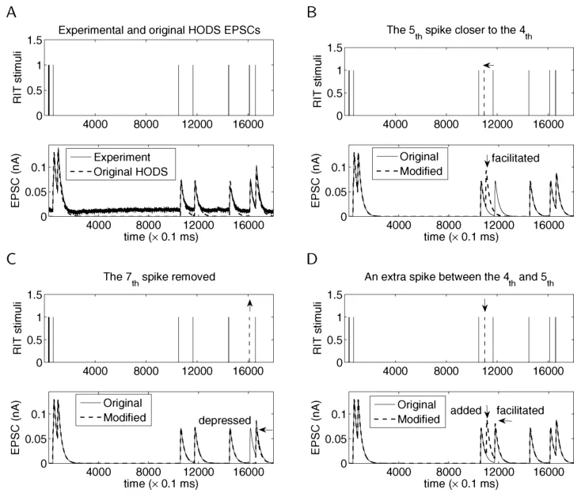
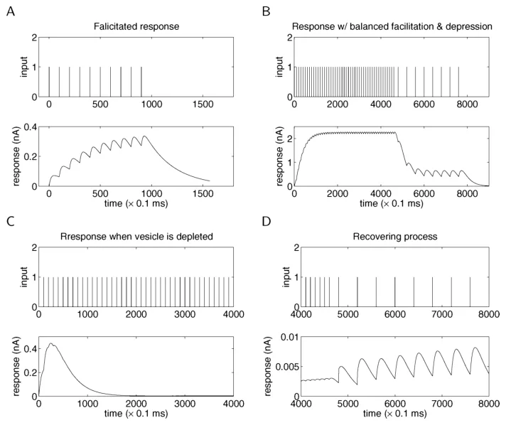

Phần II · Bài 15 — Mô hình phi tuyến bậc cao cho synap động & Chỉ mục (Index)
Bảng 4 Ước lượng bảy tham số HODS
C2+
o 2 mM 1 mM
a
FIT (10 Hz) RIT (2 Hz) FIT (5 Hz) RIT (2 Hz)
μU 0.45 0.51 0.02 0.01
μR 0.74 0.66 0.22 0.01
μP 0.09 0.08 0.01 0.04
τI (ms) 12.19 13.82 10.52 63.72
CI 0.93 0.83 1.04 0.23
τE (ms) 24.29 27.53 19.54 7.41
CE (%) 0.81 0.72 1.09 1.34
gần như bằng không. Lý do chính xác chưa rõ, nhưng có thể là do không gian hàm chi phí phẳng của các mô hình DS và FD được xác định trên dữ liệu thực nghiệm hồi hải mã đã ghi nhận.
Mặc dù mô hình HODS không được xây dựng một cách gò bó để nhận diện một cấu trúc sinh lý học thần kinh cụ thể, các tham số vẫn có thể được liên hệ một cách ngầm định với các ý nghĩa sinh lý học thần kinh nền tảng từ thực tế thực nghiệm. Trong Bảng 4, các tốc độ truyền tải μR, μP và μU lớn hơn dưới điều kiện
C2+
o = 2 mM so với dưới điều kiện a
C2+
o = 1 mM. Kết quả là, quá trình làm đầy lại và tái chế túi synap diễn ra nhanh hơn khi nồng độ canxi lớn hơn. Đối với các kích thích RIT, CI lớn hơn và τI nhỏ hơn dưới điều kiện C2+ a o = 2 mM so với dưới điều kiện C2+ o = 1 mM. Do đó, tốc độ giải phóng không dừng μI(t) tăng lên khi nồng độ canxi tăng, và sự kiện giải phóng túi synap được tạo điều kiện thuận lợi hơn nhờ tốc độ giải phóng tăng lên. Những giá trị tham số này, ở một mức độ nào đó, mang lại cái nhìn sâu sắc về ý nghĩa của các đại lượng thực nghiệm sinh lý học thần kinh như nồng độ canxi, điều này phù hợp với thực tế là sự gia tăng phụ thuộc canxi tạo ra hiệu ứng tăng cường (facilitation) đối với xác suất giải phóng túi synap [2, 3].
a a
3.2 Độ bền vững đối với nhiễu cộng (Robustness to Additive Noise)
Để kiểm tra độ bền vững của mô hình HODS, nhiễu Gauss trắng cộng (AWGN) với SNR = 0 dB (tỷ lệ tín hiệu trên nhiễu) được thêm vào đầu ra thực nghiệm có đầu vào FIT và
C2+
o = 2 mM. Đầu ra ước lượng của mô hình HODS được minh họa trong Hình 4, và được so sánh với đầu ra thực nghiệm không nhiễu. Như hình vẽ thể hiện rõ ràng, mô hình HODS có khả năng loại bỏ nhiễu cộng và khôi phục lại đầu ra thực nghiệm sạch.
a
Dưới các điều kiện thực nghiệm bất lợi, chẳng hạn như nhiễu cơ học của thiết bị hoặc nhiễu loạn nền, nhiễu không mong muốn có thể bị thêm vào đáp ứng synap thực tế. Do đó, việc mô hình hiện tại có thể truy xuất lại dữ liệu thực nghiệm không nhiễu ngay cả khi nó bị làm mờ bởi nhiễu cộng là rất có giá trị. Ngoài ra, các giá trị
Hình 4 Hình phụ phía trên hiển thị đầu ra thực nghiệm bị che lấp bởi nhiễu với AWGN (SNR = 0 dB). Hình phụ phía dưới minh họa rằng mô hình HODS có thể khôi phục kết quả thực nghiệm không nhiễu 0 1000 2000 3000 4000 −0.1
Đầu ra với WGN cộng SNR = 0 dB
0.2
EPSC (nA)
0.1
0
EPSC thực nghiệm không nhiễu & ước lượng
0.2
Thực nghiệm sạch Ước lượng
EPSC (nA)
0.1
0
0 1000 2000 3000 4000 −0.1 thời gian (× 0.1 ms) tham số ước lượng là μU = 0.452, μR = 0.741, μP = 0.0926, τI = 12.20 ms, CI = 0.926, τE = 24.31 ms, CE = 0.806%, rất gần với các giá trị được ước lượng ở cột 2 trong Bảng 4 khi đầu ra không có nhiễu. Thực tế là các tham số gần nhau trong trường hợp có nhiễu và trường hợp không nhiễu cho thấy mô hình HODS có độ bền vững cao và có thể hội tụ từ điểm bị làm mờ bởi nhiễu về điểm không nhiễu trong không gian hàm chi phí. Để khám phá thêm thực tế này, SNR được thay đổi từ −20 dB đến 10 dB, trong khi các giá trị tham số vẫn giữ gần với các giá trị ở cột 2 trong Bảng 4 với độ lệch nhỏ khoảng 0.2% đến 1%. Đối với các hệ động lực sinh lý học thần kinh nhiều chiều bị nhiễu loạn bởi nhiễu hỗn loạn, một phân tích ổn định lý thuyết có thể được sử dụng để mô tả một dải tham số rộng dưới các chuyển pha trạng thái xảy ra đột ngột [12, 13]. Vì mục đích chính của nghiên cứu hiện tại là thiết lập một mô hình synap động bậc cao, phân tích hỗn loạn không được trình bày chi tiết trong chương này.
3.3 Đáp ứng với các xung đầu vào thay đổi
Vì hoạt động EPSC tại thời điểm hiện tại không chỉ chịu ảnh hưởng bởi xung đầu vào hiện tại mà còn bởi các xung trước đó, mô hình đề xuất sử dụng nhiều bể nối tiếp nhau để ghi nhớ thông tin xung trước đó. Để nhấn mạnh tầm quan trọng của trí nhớ synap được đặc trưng bởi các khoảng thời gian giữa các xung đầu vào, các thử nghiệm sau đây được thực hiện.
Đáp ứng EPSC thực nghiệm với RIT (tần số 2 Hz) và dưới điều kiện C2+ a o = 1 mM đầu tiên được đưa ra trong Hình 5(A), và đầu ra EPSC ước lượng của mô hình HODS cũng được trình bày. Các tham số được lấy từ cột 5 trong Bảng 4 và được cố định khi áp dụng mô hình HODS đáp ứng với các đầu vào thay đổi. Đáp ứng HODS ước lượng trong Hình 5(A) được coi là mẫu đáp ứng gốc. Tiếp theo, các xung đầu vào được thay đổi và đáp ứng tương ứng được thu nhận. Khi xung đầu vào thứ 5 được dịch chuyển lại gần xung thứ 4 hơn, đáp ứng thứ 5 được tăng cường với biên độ cao hơn so với đáp ứng thứ 5 gốc, như minh họa trong Hình 5(B). Trong Hình 5(C), nếu xung đầu vào thứ 7 bị loại bỏ thì đáp ứng thứ 8 theo đó bị ức chế.

Hình 5 (A) Mô hình HODS có thể dự đoán kết quả thực nghiệm và đường cong EPSC HODS ước lượng được gọi là đáp ứng HODS gốc. (B) Khi dịch chuyển xung đầu vào thứ 5 lại gần xung thứ 4, đáp ứng HODS thứ 5 được tăng cường. (C) Nếu xung thứ 7 bị loại bỏ, đáp ứng thứ 8 bị ức chế. (D) Khi thêm một xung phụ giữa xung thứ 4 và thứ 5, đáp ứng thứ 5 được tăng cường, và đáp ứng phụ cũng được tăng cường do sự gần nhau giữa xung được thêm vào và xung thứ 4 so với đáp ứng gốc. Sau đó, một xung đầu vào phụ được thêm vào giữa xung thứ 4 và thứ 5, và do đó đáp ứng thứ 5 và đáp ứng được thêm vào đều được tăng cường như thể hiện trong Hình 5(D).
Có thể quan sát thấy rằng mô hình HODS với một tập hợp các tham số cố định có thể được coi là một bộ lọc động, thay đổi đáp ứng của nó theo các đầu vào thay đổi, đặc biệt là theo các biến thiên thời gian. Các khoảng thời gian giữa xung đầu vào hiện tại và các xung trước đó điều chỉnh các đáp ứng HODS. Tính chất này chỉ ra rằng mô hình động có thể được áp dụng như một bộ lọc để đáp ứng có chọn lọc với các đầu vào có thời gian cụ thể. Vì diễn biến thời gian của mô hình HODS liên quan đến các tốc độ truyền tải, người ta cũng giả thuyết rằng việc thay đổi tốc độ truyền tải có thể cung cấp tính chọn lọc đầu vào theo thời gian khác nhau.
3.4 Đáp ứng với một chuỗi xung đầu vào
Hoạt động tăng cường và ức chế đáp ứng với sự lặp lại của các xung tiền synap [2] được nghiên cứu trong phần này. Với một chuỗi xung ngắn (tần số 100 Hz, thời lượng 90 ms) kích thích synap, đáp ứng HODS bị chi phối bởi hiệu ứng tăng cường và tăng lên tương ứng khi có thêm nhiều xung đến, như minh họa trong Hình 6(A). Tuy nhiên, nếu các xung đầu vào duy trì lâu hơn (thời lượng hơn 100 ms), hiệu ứng ức chế bắt đầu tác động, và đáp ứng ngừng tăng sau thời điểm 100 ms trong Hình 6(B), do sự cân bằng giữa hiệu ứng tăng cường và ức chế; sau đó, đối với các xung đầu vào có tần số thấp hơn (tần số 25 Hz), cả hai hiệu ứng cũng duy trì ở trạng thái bão hòa. Trong một trường hợp cực đoan, nếu bể giải phóng tức thời bị cạn kiệt, không có đáp ứng nào xảy ra ngay cả khi có các xung duy trì liên tục kích thích synap, chẳng hạn như đường cong đáp ứng được minh họa sau thời điểm 160 ms trong Hình 6(C). Sau đó, nếu ngừng kích thích liên tục của các xung tần số cao hơn trong một khoảng thời gian, hoặc sử dụng đầu vào tần số thấp hơn như trong Hình 6(D), bể giải phóng tức thời có thể dần được làm đầy lại và túi synap lại sẵn sàng để giải phóng nhằm kích thích đáp ứng hậu synap.
Những đáp ứng được tạo ra bởi các chuỗi xung này có thể đại diện cho sự tăng cường và ức chế synap. Sự tăng cường/ức chế mà mô hình HODS thể hiện tương tự với các kết quả thực nghiệm sinh lý học thần kinh [2, 6] – đối với các xung đầu vào lặp lại, EPSC ban đầu được tăng cường bởi hiệu ứng tăng cường, và sau đó đáp ứng bị đối kháng bởi

Hình 6 (A) Khi một chuỗi xung ngắn là đầu vào của hệ thống, sự tăng cường chiếm ưu thế và đáp ứng HODS được tăng cường. (B) Nếu chuỗi xung dài hơn, hiệu ứng ức chế bắt đầu phát huy tác dụng, và đáp ứng HODS đạt đến trạng thái bình nguyên do sự cân bằng giữa hiệu ứng tăng cường và ức chế. (C) Trong trường hợp cực đoan khi các túi trong bể giải phóng tức thời bị cạn kiệt, mô hình HODS hầu như không có đáp ứng với các xung đầu vào. (D) Mô hình HODS dần đáp ứng với một chuỗi xung có tần số thấp hơn bằng cách làm đầy lại các túi từ các bể khác sự ức chế đối với các xung dài hơn. Mô hình hiện tại không bị tràn ngay cả với một chuỗi xung đầu vào vô hạn, và có thể dần phục hồi bằng cách được làm đầy lại từ các bể khác vào bể giải phóng tức thời. Sự kiện tự giới hạn của HODS này phù hợp với thực tế là một synap sinh học thực tế có tính ổn định.
4 Mở rộng và Thảo luận
Một ví dụ về tính linh hoạt của mô thức động hiện tại được đưa ra bằng cách thao tác trên mô hình và diễn giải thao tác đó, tức là các giả thuyết khác có thể được suy đoán trong mô hình synap động đa bậc. Ví dụ, bể giải phóng tức thời chỉ có thể có một số lượng cố định MNI các vị trí giải phóng hoạt động [5, 6, 8] và kích thước bể NI không thể vượt quá con số này. Người ta giả thuyết rằng bể đã sử dụng có thể tạo ra một quá trình tái chế nhanh về bể giải phóng đã chuẩn bị [6], và một mũi tên với tốc độ μU−P biểu thị trường hợp như vậy trong Hình 7. Bên cạnh đó, bể giải phóng tức thời và bể giải phóng đã chuẩn bị có thể có các tốc độ truyền tải ngược λI−P, λP−R để minh họa cho sự chuyển giao túi 'ngược' được tìm thấy ở một số synap đặc biệt [6], ví dụ, sự suy giảm khả năng giải phóng túi do các chất truyền tin thứ cấp ở trạng thái bất hoạt của thụ thể NMDA (N-methyl-D-aspartic acid) [14].
Trước đây, khi thiết kế mô hình HODS để khám phá sự truyền dẫn synap đầu vào-đầu ra, các điện thế hoạt động hậu synap lan truyền ngược được giả định là ảnh hưởng một cách ngầm định đến sự truyền dẫn synap thông qua bể đã sử dụng. Giả định này cũng có thể được mở rộng một cách tường minh sao cho các cơ chế tiền synap và hậu synap dường như hoạt động nối tiếp nhau, gợi ý sự điều hòa phối hợp của cả hai phía của synap [15, 16]. Dấu vết điện áp của một điện thế hoạt động lan truyền ngược có thể
CI CF μI (t)
E
δ (t–tn) δ (t–tn) m n
AP đầu vào AP hậu synap
μR–P μP–I μU–S μL NU NS
NR NP NI
E
Giải phóng
λP–R λI–P μU–R μU–P
I MN
μS–R
Hình 7 Các mở rộng khả dĩ của mô hình HODS: có một cận trên của số lượng túi trong bể giải phóng tức thời, MNI ; bể đã sử dụng có thể tạo ra tốc độ tái chế nhanh μU−P về bể giải phóng đã chuẩn bị; bể giải phóng tức thời và bể giải phóng đã chuẩn bị có thể có các tốc độ truyền tải ngược λI−P, λP−R chỉ ra sự suy giảm khả năng giải phóng túi; m δ(t −tm) biểu diễn các điện thế hoạt động hậu synap lan truyền ngược ảnh hưởng đến tốc độ giải phóng túi với hệ số khuếch đại CF; Một bể mới gọi là bể đã sử dụng chậm với NS túi chất dẫn truyền thần kinh được định nghĩa để biểu diễn một quá trình tái hấp thu dài hơn so với bể đã sử dụng; μL mô tả quá trình mất chất dẫn truyền thần kinh, trong khi μE mô tả quá trình sinh tổng hợp tạo ra chất dẫn truyền thần kinh là một chuỗi xung phản hồi (đầu vào thứ hai) tới tiền synap, ảnh hưởng trực tiếp đến tốc độ giải phóng không dừng μI (t) [17]. Thực tế này được thể hiện trong Hình 7 với hệ số khuếch đại CF và các xung m δ(t −tm). Nhiều sơ đồ dẻo synap [14, 18, 19, 20] có thể được áp dụng để định nghĩa μI(t) như một hàm của thời gian xung tiền synap và hậu synap tương đối. Ngoài ra, do các cơ chế động học khác nhau của các thụ thể chất dẫn truyền thần kinh ở phía hậu synap [4], người ta cũng giả định rằng có thể có một bể khác để suy ra các tốc độ gắn kết/trôi qua khác nhau, dẫn đến các tốc độ tái hấp thu khác nhau đối với các túi đã giải phóng. Trong trường hợp như vậy, có một bể mới, được gọi là bể đã sử dụng chậm với NS túi chất dẫn truyền thần kinh, để biểu diễn một quá trình tái hấp thu dài hơn so với bể đã sử dụng.
Hơn nữa, giả sử rằng một số chất dẫn truyền thần kinh đã giải phóng có thể bị loại bỏ và thất thoát ra ngoài cặp tiền-hậu-synap [21], một tốc độ thất thoát μL có thể mô tả quá trình này. Cân bằng với sự thất thoát chất dẫn truyền thần kinh, một tốc độ đi vào μE có thể mô tả các khả năng sinh tổng hợp của việc sản xuất chất dẫn truyền thần kinh trong các nơ-ron, chẳng hạn như các nơ-ron hạch cổ trên [22]. Hơn nữa, người ta phát hiện ra rằng sự truyền dẫn synap thay đổi đáng kể theo nhiệt độ [23]. Các tốc độ truyền tải của mô hình hiện tại mô tả các hoạt động synap có thể được định nghĩa là các biến phụ thuộc nhiệt độ.
Mô hình phức tạp trong Hình 7 cố gắng tích hợp càng nhiều hoạt động synap càng tốt. Người ta kỳ vọng rằng sự mở rộng khả dĩ này có thể giúp mô hình HODS khám phá thêm nhiều động lực học synap hơn. Như một lưu ý thận trọng, do thiếu dữ liệu thực nghiệm, sơ đồ đề xuất vẫn còn chưa chắc chắn và cần sự xác nhận thực nghiệm nâng cao để nhận diện cách thức túi synap di chuyển giữa nhiều bể và tốc độ di chuyển của nó dưới các điều kiện sinh học khác nhau. Tuy nhiên, những ưu điểm của mô hình HODS và tính linh hoạt khả dĩ của nó rất đáng được nghiên cứu trong lĩnh vực động lực học synap tiềm năng.
5 Kết luận
Được thúc đẩy bởi quan sát sinh học gợi ý sự tồn tại của nhiều loại bể túi trong synap, một hàm synap động bậc cao sử dụng động học bể (pooling kinetics) đã được đề xuất. Mô hình đề xuất mô tả sinh lý học của sự truyền dẫn synap phụ thuộc vào việc túi chất dẫn truyền thần kinh di chuyển giữa nhiều bể túi với các tốc độ truyền tải khác nhau, cả giá trị hằng số và không dừng. Sự tăng cường và ức chế đa bậc vốn có được tạo ra khi mỗi bể túi hỗ trợ độc lập một loại hiệu ứng tăng cường hoặc ức chế. Khi so sánh dữ liệu thực nghiệm được ghi nhận tại các nơ-ron tháp Schaffer collateral – CA1 với các dự đoán của mô hình HODS, DS và FD, mô hình HODS đạt hiệu năng tốt hơn cả hai mô hình DS và FD với cả xung khoảng cố định lẫn xung khoảng ngẫu nhiên Poisson. Hơn nữa, mô hình hiện tại có khả năng khôi phục đáp ứng không nhiễu khi dữ liệu thực nghiệm bị nhiễm nhiễu Gauss trắng cộng. Phân tích số trong các Mục 3.3 và 3.4 cho thấy mô hình HODS có tính chất lọc động đối với các xung đầu vào thay đổi.
Có thể quan sát thấy rằng mô hình đề xuất thể hiện một số đặc điểm khiến nó trở thành một công cụ có giá trị để mô tả tính toán các synap sinh học: mô hình hóa độc lập các thành phần chức năng phụ, tập hợp tham số tự do kích thước nhỏ và tính linh hoạt. Một biểu diễn tối giản dựa trên nhiều hiệu ứng bể độc lập đã được khảo sát. Và một vài tham số đáng tin cậy được sử dụng để biểu thị các động lực học cốt lõi của tín hiệu xung, điều này phù hợp với mục tiêu thiết kế một mô hình tốt – đạt hiệu năng tốt nhất có thể trong khi bậc tự do (số lượng tham số) của mô hình nhỏ nhất có thể. Bên cạnh đó, mô hình hiện tại có thể được mở rộng linh hoạt để khám phá thêm nhiều hoạt động động lực học synap. Ba đặc điểm mô hình này dẫn đến một mô tả synap dễ tối ưu hóa hơn so với các mô hình DS hoặc FD, để mô tả bản chất động và nhiều hiệu ứng tăng cường và ức chế được biểu hiện bởi các synap hóa học.
Bằng chứng thực nghiệm trực tiếp ủng hộ phân tích này hiện vẫn còn thiếu. Vẫn còn tồn tại khó khăn kỹ thuật trong việc thu thập các bản ghi để xác minh số lượng túi di chuyển và nhận diện tốc độ truyền tải của từng túi. Tuy nhiên, việc xây dựng mô hình synap động bậc cao dựa trên các kết quả thực nghiệm sinh lý học thần kinh cơ bản. Do đó, mô hình này, có xem xét đến các thực tế sinh lý học thần kinh trong quá trình thiết kế, có thể thể hiện một số quy tắc học tập dựa trên sinh học khi đáp ứng với các xung thời gian đầu vào. Ngoài ra, người ta kỳ vọng rằng nghiên cứu này sẽ truyền cảm hứng cho nhiều sự quan tâm hơn trong việc xác nhận thực nghiệm các thực tế sinh lý học thần kinh và truyền cảm hứng cho việc mô hình hóa synap bậc cao dựa trên động học bể.
Mô hình đề xuất đóng vai trò là một điểm khởi đầu tốt cho việc mở rộng cấu trúc mạng nơ-ron động. Các synap thần kinh động bậc cao hiện tại đã được sử dụng làm các đơn vị tính toán cơ bản để xây dựng một mạng nơ-ron động hai chiều thời gian-tần số cho việc nhận dạng người nói [24]. Sơ đồ mạng này có khả năng khám phá các đặc trưng thời gian dài hạn của dữ liệu tiếng nói. Hơn nữa, cấu trúc phân cấp biểu thị động lực học não bộ ở các cấp độ khác nhau có thể được cấu thành từ các thành phần cục bộ-toàn cục [25]. Người ta cũng giả thuyết rằng các mô-đun thần kinh ở các cấp độ khác nhau có thể được thiết kế dựa trên synap động hiện tại. Mỗi mô-đun có thể thực hiện một chức năng đặc biệt, và các mô-đun mạng chức năng khác nhau cùng nhau thực hiện một nhiệm vụ học tập phức tạp. Làm thế nào để chỉ định chức năng đặc biệt cho từng mô-đun và làm thế nào để định nghĩa các kết nối giữa các mô-đun mạng vẫn là hướng nghiên cứu trong tương lai.
Lời cảm ơn Các tác giả xin cảm ơn Tiến sĩ Dong Song đã cung cấp và giải thích dữ liệu sinh lý học thực nghiệm, các đáp ứng synap ngắn hạn của các nơ-ron tháp Schaffer collateral – CA1 ở hồi hải mã.
Tài liệu tham khảo
1. J.S. Liaw and T.W. Berger. Dynamic synapse: a new concept of neural representation and computation. Hippocampus, 6:591–600, 1996. 2. J.S. Dittman, A.C. Kreitzer, and W.G. Regehr. Interplay between facilitation, depression, and residual calcium at three presynaptic terminals. Journal of Neuroscience, 20:1374–1385, 2000.
3. D. Song, Z. Wang, V.Z. Marmarelis, and T.W. Berger. A modeling paradigm incorporating parametric and non-parametric methods. IEEE EMBS, 1:647–650, 2004. 4. C.F. Stevens and J.F. Wesseling. Identification of a novel process limiting the rate of synaptic vesicle cycling at hippocampal synapses. Neuron, 24:1017–1028, 1999. 5. R. Delgado, C. Maureira, C. Oliva, Y. Kidokoro, and P. Labarca. Size of vesicle pools, rates of mobilization, and recycling at neuromuscular synapses of a drosophila mutant, shibire. Neuron, 28:941–953, 2000. 6. R.S. Zucker and W.G. Regehr. Short-term synaptic plasticity. Annual Review of Physiology, 64:355–405, 2002. 7. W. Maass and A.M. Zador. Dynamic stochastic synapses as computational units. Neural Computation, 11:903–917, 1999. 8. V. Matveev and X.-J. Wang. Implications of all-or-none synaptic transmittion and shortterm depression beyond vesicle depletion: a computational study. Journal of Neuroscience, 20:1575–1588, 2000. 9. H. Stark and J.W. Woods. Probability, random processes, and estimation theory for engineers. 2nd edition, Prentice Hall, 1994. 10. D. Bertsekas and R. Gallager. Data networks. 2nd edition, Prentice Hall, 1992. 11. J.A. Nelder and R. Mead. A simplex method for function minimization. Computer Journal, 7:308–313, 1965. 12. W.J. Freeman, R. Kozma, and P.J. Werbos. Biocomplexity: adaptive behavior in complex stochastic systems. BioSystems, 59:109–123, 2001. 13. R. Kozma. On the constructive role of noise in stabilizing itinerant trajectories on chaotic dynamical systems. Chaos, 13:1078–1089, 2003. 14. W. Senn, H. Markram, and M. Tsodyks. An algorithm for modifying neurotransmitter release probability based on pre- and postsynaptic spike timing. Neural Computation, 13:35–67, 2001. 15. F.-M. Lu and R.D. Hawkins. Presynaptic and postsynaptic C2+ a and CamKII contribute to long-term potentiation at synapses between individual CA3 neurons. Proceedings of the National Academy of Sciences, 103:4264–4269, 2006. 16. X.-L. Zhang, Z.-Y. Zhou, J. Winterer, W. M¨uller, and P.K. Stanton. NMDA-dependent, but not group I metabotropic glutamate receptor-dependent, long-term depression at Schaffer Collateral¨CCA1 synapses is associated with long-term reduction of release from the rapidly recycling presynaptic vesicle pool. Journal of Neuroscience, 26:10270–10280, 2006. 17. H.Z. Shouval, M.F. Bear, and L.N. Cooper. A unified model of NMDA receptor-dependent bidirectional synaptic plasticity. Proceedings of the National Academy of Sciences, 99: 10831–10836, 2002. 18. P.J. Sj¨ostr¨om, G.G. Turrigiano, and S.B. Nelson. Rate, timing, and cooperatively jointly determine cortical synaptic plasticity. Neuron, 32:1149–1164, 2001. 19. H.X. Wang, R.C. Gerkin, D.W. Nauen, and G.Q. Bi. Coactivation and timing-dependent integration of synaptic potentiation and depression. Nature Neuroscience, 8:187–193, 2005. 20. J.-P. Pfister and W. Gerstner. Triplets of spikes in a model of spike timing-dependent plasticity. Journal of Neuroscience, 26:9673–9682, 2006. 21. T.S. Otis, M.P. Kavanaugh, and C.E. Jahr. Postsynaptic glutamate transport at the climbing fiber-Purkinje cell synapse. Science, 277:1515–1518, 1997. 22. R. Marx, R.E. Meskini, D.C. Johns, and R.E. Mains. Differences in the ways sympathetic neurons and endocrine cells process, store, and secrete exogenous neuropeptides and peptideprocessing enzymes. Journal of Neuroscience, 19:8300–8311, 1999. 23. V.A. Klyachko and C.F. Stevens. Temperature-dependent shift of balance among the components of short-term plasticity in hippocampal synapses. Journal of Neuroscience, 26:6945–6957, 2006. 24. B. Lu, W.M. Yamada, and T.W. Berger. Nonlinear dynamic neural network for textindependent speaker identification using information theoretic learning technology. IEEE EMBS, 2006.
25. W.J. Freeman and R. Kozma. Local-global interactions and the role of mesoscopic (intermediate-range) elements in brain dynamics. Behavioral and Brain Sciences, 23:401, 2000. 26. W.E. Boyce and R.C. DiPrima. Elementary differential equations and boundary value problems. 4th edition, Wiley, New York, 1986.
Phụ lục A: Dẫn xuất bậc cao
Bằng cách thay thế nối tiếp các biến trong (2), (3), (4) và (5) trong khi giữ lại các biến μI (t) và NI (t), các hoạt động synap có thể được viết tương đương dưới dạng một phương trình vi phân bậc ba
d3NI (t) dt3 + d2(μI (t)NI (t))
1 μUμRμP δ(t −tn) dt2 n
1 μUμR d2NI (t) dt2 + d(μI(t)NI (t))
+ 1 μRμP
+ 1 μPμU
+ δ(t −tn) dt n
1 dNI (t)
+ 1
+ 1
+ dt + μI (t)NI (t) δ(t −tn)
+ NI (t) μU μR μP n
= 0, trong đó các hệ số suy ra cho các số hạng vi phân đa bậc là các hàm của tốc độ truyền tải giữa các bể. Do đó, có thể kỳ vọng rằng nghiệm của phương trình hoàn toàn liên quan đến phép cộng và/hoặc phép nhân của nghịch đảo các tốc độ truyền tải. Nghiệm là một hàm mũ của các nghiệm phương trình, do đó cũng là một hàm mũ của nhiều tốc độ truyền tải (để biết chi tiết về phương trình vi phân thường, vui lòng xem [26]). Vì vậy, nghịch đảo của các tốc độ truyền tải mô tả diễn biến thời gian của động học túi synap bậc cao.
Chỉ mục
Hệ thống giao tiếp trừu tượng, 327 Khái niệm trừu tượng, 79 Tích lũy tri thức, 95 ACT-R, 133 Hành động, 1, 2, 11, 12, 14, 15, 23, 26, 33, 34, 43,
Thiên thần và ác quỷ, 172, 174, 175 Vỏ não đai trước, 169 Nhân khứu giác trước, 34, 148 Không tuần hoàn, 2, 12, 13, 16, 34, 35, 51, 141, 142,
146, 258 Aristotle, 3, 74–76, 110, 185 Nghệ thuật, 6, 77, 96, 103, 104, 106, 132, 338 Trí tuệ nhân tạo (AI), 133, 306 Vỏ não liên hợp, 62 Trí nhớ liên tưởng, 63, 128, 295, 298, 301,
48, 66, 104, 114–117, 131, 133, 139, 141, 143, 144, 146, 149, 153, 154, 157, 168, 169, 172, 173, 185–203, 205–208, 211, 213, 215–219, 228, 230, 232, 234, 235, 292, 336, 341, 342, 344, 345, 347, 354 Mô hình chủ động, 89 Adachi, 280 Thích nghi, 2, 66, 74, 78, 80, 86–88, 119, 134,
308 Atmanspacher, 28 Chú ý, 4, 41, 43, 48, 53, 122, 165, 167,
215, 218, 251 Tàn tích điểm hút, 3 Điểm hút, 1, 7, 42, 45, 46, 48, 51, 52, 175,
146, 298 Thuật toán thích nghi, 74 Hành vi thích nghi, 61 Hệ thống Phê bình Thích nghi, 6, 116 Lý thuyết cộng hưởng thích nghi, 172 Cảm xúc thẩm mỹ, 5, 77, 90, 92, 104–106,
179, 258, 259, 261, 281, 284, 285, 288, 289, 291, 293–295, 298, 300–302, 305–310, 312–322 Thính giác, 13, 16, 35, 106, 137, 141, 268, 270 Nhận dạng đối tượng tự động, 211 Sợi trục, 18, 63, 140, 142, 261, 290
233 Hài hòa thẩm mỹ, 164 Tác nhân, 4, 6, 93, 144, 148, 150, 154, 185–188,
190, 207 Vòng lặp tác nhân-môi trường, 185, 188 Aihara, 280 Albus, 119 Vỏ não cổ, 16, 35 Vị tha, 164 Amari, 114, 306 Điều biến biên độ, 2, 13, 35, 61, 62, 134,
Baars, 136 Lan truyền ngược, 114, 116, 118, 119, 121,
127, 192 Barto, 125, 213, 215 Hạch nền, 5, 118, 119, 125, 126, 146, 163,
168, 169, 214 Bản năng cơ bản, 74, 76 Bayes, 82, 243 Quyết định Bayes, 80 Xác suất Bayes, 82 Hành vi, 4, 6, 14, 39, 41, 42, 44–46, 48,
136, 139, 146 Hạch hạnh nhân, 3, 4, 6, 144–146, 148, 152, 153,
163, 167–170, 174, 175, 233, 235, 249, 251 Phân tích độ ổn định, 294 Ai Cập cổ đại, 100 Anderson, 125 Andras, 7, 325, 327, 328, 330–332 Thiên thần, 171, 172, 174, 175
51, 53, 63, 73, 74, 77, 86–88, 92, 104, 110, 111, 119, 124, 127, 133, 135, 139, 141, 143, 144, 149, 150, 156, 157, 163, 164, 167, 169, 171, 172, 174–176, 189, 214, 221, 245, 270, 279–281, 283–290, 294–297, 321, 328
Mẫu hình hành vi, 164 Phương trình Bellman, 109, 112, 113, 115, 119,
Cloninger, 175 Nhiễu tạp, 84, 85, 149 Nhận thức, 1–3, 5–7, 15, 44, 47, 66, 73, 76, 77,
213, 216 Bergson, 188 Berlyne, 74 Bersini, 7, 305 Dải Beta, 2 Phân nhánh, 15, 44, 45, 48, 279–281, 283,
79, 83, 86, 90, 92, 93, 100, 104–106, 131–135, 143, 144, 169, 171, 172, 176, 189, 218, 268, 341 Tính mạch lạc nhận thức, 64, 66 Bất hòa nhận thức, 105 Phân cấp nhận thức, 106 Vi trạng thái nhận thức, 64 Mô hình nhận thức, 92 Cohen, 167, 179, 180, 189 Độ phức tạp tổ hợp, 4, 81 Các điểm hút cạnh tranh, 320, 321 Cạnh tranh-hợp tác, 165 Khái niệm, 34, 42, 73, 76–78, 80, 85–92, 95, 97,
286–288, 290, 292, 294–296 Biểu đồ phân nhánh, 286, 287, 296 Hệ thống thị giác sinh học, 212 Não chim, 125, 128 Tính lưỡng ổn định, 12, 25 Blauch, 29 Blum, 164 Boole, 75 Từ dưới lên, 78, 79, 87, 90, 105, 131, 135, 241 Não bộ, 1–6, 12, 14, 30, 32, 39–44, 46, 48–51,
98, 100, 103–106, 110, 121, 127, 131, 133, 136, 157, 172, 185, 186, 188, 213, 281, 291 Khái niệm và cảm xúc, 78, 92, 104 Phân hóa khái niệm, 95, 105 Chủ nghĩa kết nối, 131, 134, 135, 261 Có ý thức, 1, 2, 5, 6, 68, 73, 76–78, 84–87, 90,
53, 54, 61, 67, 68, 78, 79, 83, 85, 94, 103, 105, 106, 109–114, 116–119, 121–126, 128, 131–133, 135, 136, 138, 139, 141, 144–146, 150, 152, 153, 157, 163, 164, 167–169, 171, 172, 174–176, 185, 186, 189, 213, 233–236, 239, 249, 280, 293, 302, 305–310, 326, 327, 331, 333, 335–337, 356 Thân não, 3, 12, 14, 144, 145, 164 Bressler, 3, 6, 15, 34, 43, 61, 136
92, 98, 104, 105, 119, 136, 233 Trạng thái có ý thức, 1, 2, 6, 73, 84 Ý thức, 1, 2, 5, 7, 11, 14, 39, 43, 44,
47, 66, 68, 73, 76, 77, 85–87, 91, 109, 132, 135, 136, 143, 149, 157, 341 Ngữ cảnh, 4, 6, 61, 62, 64, 81, 123, 132, 133,
Caianiello, 280 Cantor, 75 Công giáo, 102 Bộ kiểm duyệt, 172, 175 Vỏ đại não, 17, 61, 63, 66, 68, 103, 116,
149, 163, 168, 169, 174, 175, 179, 279, 280, 282, 290, 298, 302, 327, 329, 335, 336 Quy tắc phụ thuộc ngữ cảnh, 163 Tính liên tục, 47, 87 Khái niệm mâu thuẫn, 105 Điều khiển, 14, 19, 20, 48, 51, 52, 85, 104, 105,
126, 153, 214 Changeux, 170 Hỗn loạn, 1–3, 6, 11–14, 29, 31, 34, 35, 52, 83,
113, 115, 117, 118, 121, 128, 135, 139, 140, 148, 150, 152, 153, 155–157, 174, 213, 215, 349 Phối hợp, 2, 6, 14, 39–54, 64–66, 68, 125,
134, 136, 139, 141–143, 146, 147, 179, 255, 256, 258–260, 264, 274, 280, 281, 283, 286, 287, 289, 292, 295, 296, 299, 307, 308, 313, 314, 316–322, 351 Cảnh quan điểm hút hỗn loạn, 14 Điểm hút hỗn loạn, 1, 281, 316, 317, 320 Động lực học hỗn loạn, 2, 13, 83, 255, 280, 281,
136, 189, 296 Vỏ não, 3–5, 12, 14–17, 22, 24–27, 29, 31–34,
41, 61–68, 74, 104–106, 124–126, 138, 144–150, 152, 153, 165, 167–171, 174, 189, 206, 214, 234, 251, 256, 310, 338 Cột vỏ não, 142 Động lực học vỏ não, 2, 14, 18, 27, 137 Hoạt động thần kinh vỏ não, 83, 136 Chuyển pha vỏ não, 135, 136, 157 Cortisol, 170 Sáng tạo, 75, 94, 109, 113, 119, 120, 125,
286, 307, 308, 317–319, 321, 322 Hành trình hỗn loạn, 3, 14, 31 Chapin, 118 Văn hóa Trung Hoa, 95 Phòng Trung Hoa, 186 Cho, 6, 122, 233, 234 Choe, 4, 6, 185–188, 208, 211 Điện ảnh, 6, 11, 16, 35, 146 Phân loại, 5, 6, 13, 14, 27, 81, 139, 140,
126, 175 Mô hình rõ, 86 Điểm tới hạn, 30, 31 Tiến hóa văn hóa, 6, 85, 99, 104, 106
145, 157, 192–200, 208, 212, 238–240, 248, 255, 256, 260–266, 268, 270–274
Nhà sử học văn hóa, 95, 96, 100, 102, 106 Khái niệm văn hóa, 89 Mô hình dự đoán văn hóa, 73 Đình trệ văn hóa, 100 Văn hóa, 6, 93–95, 97, 99–102, 104, 127, 164 Sụp đổ văn hóa, 97 Lời nguyền đa chiều, 4, 81, 213, 215
Điện cực, 11, 12, 22, 26, 65, 137 Hiện thân, 64, 133, 145, 188, 189 Phân cấp đang nổi lên, 106 Cảm xúc, 4, 5, 91, 93, 104, 167–169, 171,
233–236, 244–247, 249, 251 Độ nổi bật cảm xúc, 163, 173, 174 Thời kỳ Khai sáng, 100 Trí nhớ phân đoạn, 206 Đường cong hồ sơ lỗi, 294 Điện thế gợi, 1, 14, 15, 18, 19, 23–25, 32,
Damasio, 77, 172 Quyết định, 1, 2, 4–6, 49, 53, 111, 115, 125–127,
146, 152, 154, 157, 164, 169, 171, 172, 211, 212, 215, 218, 233, 240, 244, 245, 286, 289, 295, 301 Dehaene, 170 Del-Moral-Hernandez, 83, 278 Deming, 106 Hồi răng, 148 Phát hiện, 15, 84, 89, 106, 140, 171, 212, 234,
258 Tiến hóa, 1, 5, 6, 67, 73, 74, 78, 83–86, 90,
91, 95–99, 101, 106, 126, 138, 164, 218, 283, 289, 295, 296, 333 Tiến hóa của ý thức, 73, 74 Tiến hóa của xã hội loài người, 97 Hưng phấn, 12, 14, 17, 20–25, 33, 141, 142,
166, 171, 172, 180, 261, 353 Loại trừ cái thứ ba, 75, 81 Hệ thống điều hành, 66, 171 Phân cấp mở rộng, 98 Tri thức mở rộng, 97 Tăng trưởng tri thức theo hàm mũ, 93 Thụ thể ngoại thụ, 144
237, 248, 269 Phát triển, 1, 34, 40, 75, 76, 86, 89, 92,
106, 134, 139, 140, 157, 164, 167, 175, 212, 245, 275 Ác quỷ, 171, 172, 175 Mô hình khái niệm phân hóa, 86 Ý thức phân hóa, 86, 105 Phân hóa, 5, 6, 49, 73, 85–87, 90–106,
Xác thực khuôn mặt, 211, 224, 226 Farhat, 280 Feldkamp, 119 Festinger, 74 Trường kích hoạt thần kinh, 78 Chiến đấu hay bỏ chạy, 169, 170 Mẫu hành động cố định, 188 Điểm cố định, 5, 44–48, 113, 141, 293, 305–308,
127, 298, 299 Phân hóa và tổng hợp, 5, 73, 92–96, 99,
101–103, 105, 106, 127 DiPrisco, 37 Bất hòa, 77 Giải ức chế, 168 Điều khiển Thích nghi Phân tán (DAC), 134 Vỏ não trước trán lưng bên, 169 Dreyfus, 133 Động lực, 2, 4, 5, 73, 74, 91, 92, 165, 214, 251,
310, 312, 313, 315–317, 319–322 Điểm hút điểm cố định, 5, 293, 306–308, 310,
313, 315, 316, 319–322 Fodor, 163 Fogel, 121 Hình thức như hiện thực, 76 Hình thức như tiềm năng, 76 Logic hình thức, 75, 76, 81, 133, 163 Hình thức, 15, 16, 29, 34, 35, 50, 66, 68, 75, 76,
302, 307, 314, 333 Điểm hút động, 291, 293 Synap động, 341–344, 346, 354–356 Hệ động lực, 2, 30, 132, 157, 345, 351 Động lực học, 1–7, 12, 14–21, 24, 26, 27, 29–31,
33–35, 39–46, 48, 50–54, 65, 66, 73, 79, 82, 83, 85, 91, 93, 102, 112, 132, 134–137, 139–142, 144–147, 149, 150, 154, 157, 174, 208, 212, 217–219, 228, 231, 278–282, 286, 288, 289, 293–295, 297, 298, 300, 305, 307, 308, 310, 312, 313, 316–322, 343, 346, 355, 356
80, 89, 104, 106, 122, 132, 141, 142, 169, 174, 255, 261, 279, 282, 286, 291, 295, 309 Freeman, 2–4, 6, 11, 40, 50–52, 83, 86, 93,
114, 135–137, 139, 140, 148, 157, 185, 186, 189, 255 Frege, 75 Freud, 87, 127, 128 Hỗn loạn bị kìm hãm, 318–321 Fu, 119, 120, 275 Độ mờ, 81–83, 89 Logic mờ, 81, 150
ECoG, 11–14, 16, 17, 19, 22, 24–30, 32, 34, 35 EEG, 1, 2, 11, 49, 51, 52, 134, 136, 137, 139,
148, 149, 152, 157, 255, 256, 258, 337 Bản ngã, 87, 127, 128 Mô hình bản ngã, 87 Eisler, 169
GABA, 17, 170 Dải Gamma, 2, 27, 137 Cổng, 33, 163, 169, 173 Khái niệm tổng quát, 5, 91, 110 Mô hình tổng quát, 90 Khái quát hóa, 14, 35, 122, 127, 134, 139,
Biến đổi Hilbert, 25, 137 Hồi hải mã, 3, 5, 6, 146–148, 150, 152, 163,
168–170, 174, 206, 233, 235, 249, 337, 342 Người nhỏ (Homunculus), 86, 87, 89 Điều kiện con người, 106 Tâm trí con người, 40, 41, 74, 90, 109, 110, 124,
152, 173, 188, 235, 242, 247, 255, 270, 272 Đức, 95 Gestalt, 143 Gibson, 188 Lý thuyết không gian làm việc toàn cục, 136 Goldman-Rakic, 126 Thiện và ác, 90 Grace, 169 Biểu đồ cột đồ họa, 294, 301, 302 Grossberg, 41, 76, 77, 85, 115, 165, 179, 180,
126, 128 Vùng dưới đồi, 3, 14, 146, 164, 165, 169, 170,
233
Bản sắc, 87, 264 Iftekharuddin, 6, 185, 211–213, 215, 216 Ilin, 121 Biến đổi ảnh, 218 Bắt chước, 189 Tính bất khả phân, 87 Thông tin, 2, 11, 12, 19, 25, 28, 30, 32–34,
306, 313 Nền tảng hóa, 157, 186, 306
41–44, 49, 79, 80, 83, 89, 118, 134, 137, 138, 143, 144, 146, 150–152, 154, 157, 170, 171, 174, 187, 189, 200, 202, 206, 212, 214, 233–236, 239, 242, 251, 254, 255, 270, 279–281, 286, 288–298, 300–302, 305–316, 319–322, 329, 331–336, 341, 342, 346, 351 Chất dẫn truyền ức chế, 170 Bản năng, 2, 4, 5, 73, 74, 76, 77, 79, 85, 105,
Quen hóa, 146, 147, 261, 262 Haken, 32, 44, 48, 51, 52, 136 Haken-Kelso-Bunz, 44, 51, 136 Hamilton-Jacobi, 112, 113 Hardy, 179 Harlow, 74 Hebb, 17, 114, 115, 308 Học tập Hebb, 147, 154, 262, 274, 308, 320 Học tập Hebb, 289 Mô hình Hebb, 128 Heidegger, 133 Bán cầu não, 5, 11, 34, 135, 136, 139, 142,
167, 185, 298 Trí tuệ, 1, 3, 4, 73–77, 81, 86, 109–112,
114–118, 122, 124, 126–128, 131–133, 135, 143, 144, 163, 260, 274, 305, 306 Thuật toán thông minh, 81 Hệ thống thông minh, 7, 112, 114 Hành động có chủ đích, 1, 131, 139, 143, 149 Hành vi có chủ đích, 6, 131, 140–142, 144,
149, 153 Dị phân cấp (Heterarchy), 4, 78, 165 Quy hoạch Động Heuristic (HDP), 213 Heuristics, 124, 163, 164, 212 NMF phân cấp, 88 Tổ chức phân cấp, 73, 150 Cấu trúc phân cấp, 89, 90, 92, 102, 103,
157 Tính có chủ đích, 143, 144, 149, 157 Đường dẫn sợi liên vùng, 63 Ngôn ngữ và nhận thức tương tác, 106 Biểu diễn trung gian, 200, 202, 208 Tính gián đoạn, 66, 318 Mô hình nội tại, 74, 76, 189 Biểu diễn nội tại, 74, 87, 298, 314 Trạng thái nội tại, 1, 4, 132, 148, 185–188, 280,
356 Phân cấp, 4, 5, 77, 78, 86–93, 95, 97–100,
105, 106, 119, 126, 139–142, 165, 166, 174, 214 Phân cấp tri thức, 91, 99 Tháp nhu cầu, 166 Phân cấp của tâm trí, 89, 91, 105 Hỗn loạn chiều cao, 86 Mô hình khái niệm cấp cao, 90 Điểm hút hỗn loạn chiều cao, 1, 255 Hoạt động dao động tần số cao, 66 Khái niệm giá trị cao, 92 Khả năng nhận thức bậc cao, 74 Chức năng nhận thức bậc cao, 1, 15, 73, 77, 124,
310–312, 314, 315 Thụ thể nội thụ, 144, 148
Jani, 173, 179 Do Thái-Cơ Đốc giáo, 99 Jung, 85, 87, 91, 94, 127
Mô hình K, 4, 141, 150 Tập K, 4, 5, 139–141, 146, 147, 149, 150, 255,
297, 302 Khái niệm cấp cao hơn, 91
256, 302 Các tập K, 4, 17, 89, 139, 140, 150
Kaneko, 280 Kant, 77 Katchalsky, 134, 135, 139 Kelso, 2, 6, 15, 39, 42–44, 50–52, 136 KI, 4, 5, 18, 19, 139–142, 148, 256, 257 KII, 4, 5, 18, 22–25, 27, 94, 139, 141, 142,
Hệ viền, 11, 15, 32, 33, 103, 104, 118,
144, 171, 233 Chu trình giới hạn, 1, 5, 25, 52, 141, 142, 179, 289,
291, 292, 295, 301, 305, 307, 309, 313, 314, 318–320 Điện thế trường cục bộ, 65 Logic, 2, 5, 6, 15, 73–76, 81–85, 87, 88, 105,
144, 145, 147, 148, 152, 153, 256, 257, 274 KIII, 5, 6, 139–148, 150, 152, 153, 255–258,
106, 135, 149, 298, 302, 327, 328 Đệ quy logistic, 282, 283, 285 Trí nhớ dài hạn, 326, 331, 334–336 Lu, 7, 341 Số mũ Lyapunov, 294, 318, 319 Hàm Lyapunov, 179, 180, 264, 307
260–266, 268, 270–274 Kilmer, 164 KIV, 4, 5, 139–150, 152–154, 156, 157 Tri thức, 1, 2, 4–6, 73, 74, 76–81, 83–86,
88–97, 100–103, 105, 106, 119, 131, 133, 135, 149, 157, 165, 211, 242, 245, 247, 297, 298, 327, 336 Tích lũy tri thức, 85, 94, 103 Bản năng tri thức, 4, 5, 73, 74, 76–80, 83–85,
Não động vật có vú, 6 Maslow, 165, 166 McCarthy, 171 McCulloch, 164, 165 Trường trung bình, 93 Ý nghĩa, 48, 52, 73, 78, 87, 89–91, 94, 95, 97,
88, 90–92, 94, 105, 106, 211, 298 KO, 18, 22, 30, 34, 140 Kozma, 1, 4, 6, 11, 31, 35, 39, 61, 73, 86, 89,
103, 104, 132, 139, 143, 150, 164, 165, 171, 186, 270, 296, 305, 308, 309, 313, 314, 320, 346, 350 Ý nghĩa và mục đích, 89–91, 94, 95, 97 Ý nghĩa của tri thức, 73 Ý nghĩa cuộc sống, 78 Cơ chế của tâm trí, 73, 75, 78 Vỏ não trước trán giữa, 169 Giai điệu giọng nói, 103, 104 Trí nhớ, 4, 7, 34, 41, 43, 64, 76, 105, 117,
93, 94, 106, 109, 121, 124, 131, 163, 185, 186, 189, 211, 255, 264, 278, 305, 325, 341
LaBar, 171 Lagrange, 111, 112 Cảnh quan các điểm hút, 282, 300, 301 Ngôn ngữ, 42, 75, 87, 90–93, 100, 104, 106,
124, 127, 131–133, 135, 150, 189, 190, 329 Ngôn ngữ và nhận thức, 91, 92 Phân cấp ngôn ngữ, 106 Bản năng ngôn ngữ, 92 Mô hình ngôn ngữ, 92 Lashley, 17, 114, 188 Học tập, 4, 12–15, 32, 33, 41, 51, 63, 74,
118, 128, 141, 146, 147, 149, 156, 169, 170, 185, 186, 188, 190–208, 235, 255, 261, 280, 281, 284, 286, 289, 295, 296, 308, 310, 311, 314, 316, 317, 320, 325–327, 330–338, 346, 351 Ý nghĩa và mục đích tinh thần, 88 Động lực học thần kinh trung mô, 157, 255 Siêu ổn định, 2, 3, 6, 12, 14, 31, 39, 40, 42–45,
76–82, 84, 92, 105, 106, 109–111, 113–119, 121, 122, 134, 135, 139, 141, 143, 146, 147, 150, 152–157, 163–165, 170, 172–175, 185, 186, 188, 189, 194, 195, 200–202, 206, 207, 211–214, 216, 218–224, 226, 228, 232, 235, 240, 242–245, 258, 261–264, 274, 289, 305, 308–310, 312–322, 326, 338, 341, 356 Độ phức tạp học tập, 81 Yêu cầu học tập, 81 LeCun, 120, 121 LeDoux, 167 Levine, 3, 4, 6, 76, 77, 105, 106, 124, 127, 163,
48–51, 65, 66, 136 Não giữa, 4, 164, 167 Thời Trung Cổ, 94 Mill, 110 Tâm trí, 4, 5, 42, 53, 73–79, 82, 83, 85–92, 100,
104–106, 119, 127, 134, 157, 185, 282, 326 Phân cấp tâm trí, 5, 90, 91 Minsky, 114, 121 Robot di động, 150 Mô hình ý nghĩa và mục đích, 89 Molter, 7, 305, 318, 319 Vùng động lực, 4, 167 Lực thúc đẩy, 76 Tương đương vận động, 188 Não chuột, 124 Đa tác nhân, 93
169, 173 Lewis, 109, 117 Li, 6, 211, 255, 275 Khả năng hợp lý, 20, 33, 80, 84, 180, 242–244, 334,
337
Đa văn hóa, 102 Đa giả thuyết, 81, 84, 85 Nhiều bể, 343, 346, 355 Âm nhạc, 53, 96, 103–106
Vỏ não trán ổ mắt, 169, 170, 174 Tham số thứ tự, 11, 27, 28, 31, 45, 51, 52,
136, 141 Oxytocin, 167, 170
Nagumo, 52, 53, 280 Ngữ nghĩa tự nhiên, 189 Nauta, 172 Vỏ não mới, 5, 14, 16, 17, 25, 26, 28, 29, 35, 50,
Papez, 118 Xử lý phân tán song song, 71, 134 Đệ quy tham số, 279, 282, 294 Nhân cạnh não thất, 167, 170 Nhận dạng mẫu, 6, 81, 89, 140, 143, 157,
109, 124–126, 233 Động lực học vỏ não mới, 14, 29 Động lực học nhận thức thần kinh, 78 Động lực học thần kinh, 73, 82, 83, 139 Trường mô hình hóa thần kinh, 5, 73, 78 Mạng nơ-ron, 1, 4, 22, 74, 81, 83–85, 89,
194, 260, 262, 274, 281, 282, 284, 286, 294–296, 301, 302 Khôi phục mẫu, 281, 289, 294, 295, 301 Pelikan, 119, 120 Pellionisz, 116 Tri giác, 1, 2, 11–13, 15, 16, 21, 26, 27,
113, 115–117, 121, 128, 134, 163–166, 175, 176, 179, 189, 191, 192, 194, 200–202, 211–213, 216, 217, 239–241, 243, 255, 256, 273, 274, 279, 281, 282, 290, 292, 293, 295, 297, 305, 306, 308–311, 320, 341, 356 Quần thể nơ-ron, 19, 139, 142, 255–257, 320 Trạng thái nhận thức thần kinh, 3, 6, 61, 62, 67, 68 Động lực học thần kinh, 1, 2, 6, 7, 51, 84, 91–93, 100,
32–35, 40, 43, 48, 53, 62, 63, 66, 73, 74, 76, 77, 79, 83, 86, 87, 90, 105, 131, 141, 143, 153, 157, 172, 185, 188, 189, 206, 214, 233 Cảm thụ, 11, 48, 144 Điểm hút tuần hoàn, 34, 286, 294, 296, 302 Perlovsky, 1, 3, 4, 6, 15, 39, 61, 73, 76, 109,
110, 124, 127, 131, 135, 158, 163, 185, 211, 233, 239, 255, 278, 297, 302, 305, 325, 335, 341 Phát triển cá nhân, 163 Nón pha, 16, 26–29, 149 Không gian pha, 12, 317, 320, 322 Đồng bộ hóa pha, 44, 50, 64–66, 68 Chuyển pha, 11, 12, 31–34, 43, 46, 48, 53,
103, 106, 131–133, 139, 141, 281 Động lực học thần kinh của sự phân hóa, 92 Động lực học thần kinh của sự tổng hợp, 92 Nơ-ron, 1, 4, 17, 18, 29, 43, 78–80, 114, 115,
121, 125, 139, 140, 192, 239, 240, 261, 280, 281, 286, 287, 289, 292, 305, 311, 313, 318, 320, 325, 331, 333, 336, 341, 342, 346 Trường nơ-ron, 89 Chất dẫn truyền thần kinh, 43, 68, 170, 179, 341–345,
131, 133, 135–139, 146, 147, 149, 157 Phineas Gage, 169 Giả thuyết hệ thống ký hiệu vật lý, 133 Pitts, 280, 306 Tính dẻo, 164, 174, 176, 308, 355 Plato, 3, 186 Thơ ca, 104 Điểm hút điểm, 5, 21, 25, 34, 140, 142, 274,
347, 354, 355 Tái chế chất dẫn truyền thần kinh, 342 Văn hóa New Guinea, 95 Tâm trí trẻ sơ sinh, 92 Newell, 114 Newman, 169 Nicolelis, 118 Duy danh luận, 134 Điểm hút điểm khác không, 21, 32, 142 Chuyển trạng thái phi tuyến, 63 Nhân vân, 168, 169, 174
281, 283, 286, 293, 309, 315, 316 Polynesia, 95 Bài hát phổ biến, 104 Posner, 171 Quy luật lũy thừa, 138 Tiền hướng tâm, 15, 32, 143 Dự đoán phát triển văn hóa tương lai, 106 Vỏ não trước trán, 4, 126, 163, 167–169, 171,
Nhận dạng đối tượng, 6, 185, 188, 200, 202, 206,
208, 211–213, 215, 218, 219, 226 Olds, 118 Khứu giác, 5, 6, 12–14, 16, 17, 20–25, 28, 34,
233, 251 Vỏ não tiền quả lê, 148, 256 Pribram, 114, 118, 119, 127 Vỏ não cảm giác sơ cấp, 15 Mồi (Priming), 15, 78, 79 Trí nhớ thủ tục, 188, 206 Prokhorov, 109, 117, 119, 213 Ngữ điệu, 103, 104
35, 52, 141, 148, 255–260, 272, 274, 275 Hành khứu giác, 36, 37, 69, 256 Tối ưu hóa, 110–113, 115, 118, 119, 123,
146, 212, 213, 215, 216, 218, 243, 244, 258, 264
Tin Lành, 102 Trừng phạt, 147, 214, 218 Pylyshyn, 163
Serpen, 119, 120 Servan-Schreiber, 167 Shakespeare, 89 Shaw, 114 Trí nhớ ngắn hạn, 310 Ký hiệu, 29, 77, 78, 332 Độ đo tương đồng, 79, 80, 82, 84, 87–89, 94,
Thỏ, 16 Duy thực luận, 134 Lý trí, 26, 27, 42, 74, 76, 80, 83, 128, 167,
190, 199, 200, 202, 320, 321, 336, 350 Trường tiếp nhận, 87, 106 Mạng hồi quy, 116, 118, 121, 128, 141 Phần tử xử lý đệ quy, 7, 83, 279, 281 Phản xạ, 12, 76, 117, 145 Thời kỳ trơ, 18, 21, 24, 26, 29–31, 280 Củng cố, 12, 35, 74, 109, 114–118, 125,
105 Simon, 114 Trí tuệ định vị, 133 Sjogren, 106 Trí nhớ kỹ năng, 197 Nguyên lý nô lệ hóa, 32, 136 Giấc ngủ, 14, 34, 325–327, 331, 335–338 Thế giới nhỏ, 138, 139 SOAR, 133 Gắn kết xã hội, 164, 167 Thân thể, 13, 16, 35, 172, 206 Liên Xô, 95, 96 Động lực học không-thời gian, 148 Phá vỡ đối xứng tự phát, 15 Điểm hút giả, 300, 301, 305, 317, 319 Xã hội ổn định, 100, 101 Quỹ đạo vectơ trạng thái, 67 Gợi bởi kích thích, 321 Căng thẳng, 126, 163, 170, 174–176 Hormone căng thẳng, 170 Xung đột, 106 Kết nối dưới vỏ não, 163 Bao gồm (Subsumption), 150 Học có giám sát, 156, 201, 214, 240, 243,
146, 147, 153–155, 185, 211–216, 218, 228, 255, 261, 262, 308 Học tăng cường, 12, 35, 74, 109, 114,
115, 118, 125, 146, 155, 211, 213–215, 255 Pha tương đối, 40, 44, 46–52, 65, 289, 299 Tính liên quan, 6, 110, 144, 171, 174, 281, 305 Tôn giáo, 92, 95, 96, 98–100, 103, 106 Điểm đẩy, 281, 284, 288, 289, 294, 302 Biểu diễn, 2, 15, 33, 52, 125, 132, 185,
188–192, 196, 200–203, 206, 208, 234–239, 241, 270, 279–281, 290, 292–295, 297, 300, 301, 310, 320, 327, 328, 335, 356 Cấu tạo lưới, 164, 167 Võng mạc, 74, 76, 79, 87, 213, 214 Phần thưởng, 147, 170, 214, 218 Richmond, 118 Điều hướng robot, 140, 152 Đế chế La Mã, 94 Quỹ tích nghiệm, 19, 21, 23, 24, 32, 34 Quy tắc, 4, 77, 81, 112, 114–116, 138, 152, 155,
309 Sutton, 117, 125, 213, 215 Nền tảng hóa ký hiệu, 131, 132 Tính toán dựa trên ký hiệu, 157 Ký hiệu, 124, 131–135, 144, 163, 302, 307,
156, 163–165, 168, 173–175, 179, 216, 217, 228–232, 243, 261–264, 274, 285, 286, 306, 308, 312, 314, 317, 320 Dựa trên quy tắc, 4, 81, 152 Russell, 75, 76
312, 316 Ký hiệu, 16, 20, 78, 131, 133, 134, 307, 327,
328 Kết nối synap, 78, 257, 259, 274, 290,
313 Truyền dẫn synap, 63, 341–343, 346, 354,
Độ nổi bật, 122, 174, 251 Salihoglu, 7, 305 Scheingraber, 28 Searle, 186 Tự ngã, 7, 12, 17, 21, 29, 31, 39, 40, 42, 44, 53,
355 Đồng bộ hóa, 28, 33, 46, 50, 64, 65, 136,
138, 149, 289, 292 Tổng hợp, 5, 6, 73, 87, 91–98, 100–106 Tổng hợp tri thức phân hóa, 105
76, 81, 86, 87, 139, 156, 157, 164–166, 172, 175, 180, 248, 255, 280, 291, 296, 297, 325, 326, 328–331, 336, 346, 354 Lợi ích cá nhân, 164 Tự học, 81 Tính tới hạn tự tổ chức, 12, 29, 31, 139 Ngữ nghĩa học, 186, 309, 333 Cảm giác-vận động, 66, 67, 185–187, 189
Tính liên quan nhiệm vụ, 163, 173 Taylor, 85, 113, 116 Học sai biệt thời gian, 135 Đồi thị, 16, 106, 117, 118, 124, 167, 168 Thaler, 119, 120 Tư duy, 40, 53, 75, 111, 114
Mạng Hồi quy Trễ Thời gian (TLRN),
185, 187, 188, 190–192, 194–196, 198–203, 206–208, 212–215, 233, 234, 238, 249, 251, 291, 331, 336 Vỏ não thị giác, 74, 76, 79, 87, 89, 148, 214,
119 Tognoli, 2, 6, 39, 136 Tolstoy, 89 Từ trên xuống, 78, 79, 87, 105, 131, 135, 309 Theo dõi, 84, 85, 206 Xã hội truyền thống, 95, 103 Huấn luyện, 13, 81, 114, 119, 121, 188, 191, 192,
233, 234, 249 Tri giác thị giác, 76, 79, 331 Vitiello, 35 Von Neumann, 111, 112, 115, 132
196, 211, 212, 231, 235, 247, 249, 255, 260–262, 264, 268, 271, 272, 289, 308, 348 Máy Turing, 132
Wang, 213, 215, 275 Gói sóng, 11, 12, 15, 16, 33–35, 61–64, 66,
67 Weijers, 106 Weinberger, 106 An lạc, 164 Werbos, 5, 6, 74, 109, 112, 113, 116, 120, 123,
Tăng trưởng không giới hạn, 97 Mô hình bất định, 2, 84, 85 Vô thức, 1, 68, 73, 78, 84–87, 92, 104,
233 Trạng thái vô thức, 1, 73, 84 Tính duy nhất, 87 Sự thống nhất của tâm lý, 86 Học không giám sát, 243 Hàm hữu dụng, 109, 111, 112, 115, 218
124, 128, 185, 192 Văn minh phương Tây, 96 Văn hóa phương Tây, 94, 99, 100 Widrow, 120 Wong, 6, 122, 233, 234 Wright, 226 Wunsch, 119, 120, 213
Tính mơ hồ, 75, 82, 83 Động học túi synap, 346, 358 Nội tạng, 165 Thị giác, 4–6, 13, 16, 35, 41, 65, 74, 76, 79, 87,
Yamasaki, 171
89, 122, 137, 141, 144, 148, 150–155,
Zadeh, 126